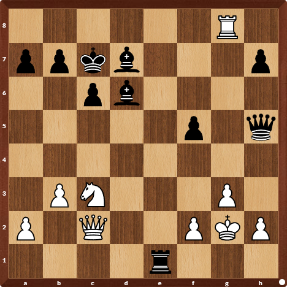

XADREZ
Gosto de jogar xadrez e resolver problemas de xadrez nos tempos vagos. Aprendi a jogar o esporte no ensino fundamental e já participei de campeonatos na escola, que apesar de eu não ter ganhado, me ajudou a gostar muito mais do jogo.
Segundo a Wikipédia:
Xadrez é um esporte, também considerado uma arte e uma ciência. Pode ser classificado como um jogo de tabuleiro de natureza recreativa ou competitiva para dois jogadores, sendo também conhecido como Xadrez Ocidental ou Xadrez Internacional para distingui-lo dos seus antecessores e de outras variantes atuais
Mas aí, você consegue encontrar a jogada vencedora para as brancas nesta posição?

Obs: Insira o lance com o nome da peça que moverá(em maiúsculo) e a jogada. Ex: Da7; Tc3; Cf2.